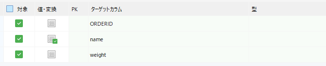

カラムマッピング設定
詳細設定を開く
各ターゲット列について、出力する値と変換手順を設定します。「対象」にチェックを入れ、「値・変換」列のアイコンをクリックすると詳細設定画面が開きます。

設定済みのアイコンにはチェックマークが付きます。「対象」を外した列は詳細設定を保持しますが、編集・実行の対象から外れます。
値と変換の設定

画像の 1 で処理を選んで追加し、手順の行を選択して 2 の項目を設定します。サンプルを入力し、3 の「変換を確認」で結果を確認します。画像をクリックすると原寸で表示できます。
各変換の用途・全24種類の設定例・詳細画面は、変換処理の使い方をご覧ください。
| 目的 | 使用する変換 |
|---|---|
| 電話番号などの一部を残して隠す | マスキング。残す文字数が入力長以上なら全体をマスクします。 |
| 元の値を隠しながら、同じ値を照合する | ハッシュ化。通常はHMAC-SHA256（SDI管理鍵）を選び、64文字以上の文字列列へ保存します。 |
ハッシュ方式ごとの違いはハッシュ方式の選び方、複数サーバーでの利用条件は同じ結果を使うための設定を参照してください。
元の値
| 種類 | 設定方法 |
|---|---|
| ソースカラム | 通常のソース列、またはAPIバインド変数の BIND:id などを選びます。 |
| 固定値 | 型と値を指定します。文字列・数値・真偽値・日時・NULLを選べます。 |
| システム値 | 実行開始時刻、行単位のUUID、実行単位のUUIDを選びます。 |
固定文字列は引用符を付けずに入力します。先頭0を残す 001 は文字列型にします。空文字とNULLは別の値です。NULL型を選んだ場合、値の入力欄は使用しません。
選択した種類に必要な欄だけが表示されます。切替前の入力内容は画面内で保持しますが、保存・実行に使うのは選択中の種類の設定です。実行開始時刻と実行単位のUUIDは、入力行ごとの処理でも同じマッピング実行内で共通です。
固定値やシステム値を設定した列は、マッピング一覧のソース欄に設定内容が表示されます。変更は「値・変換」のアイコンから行います。
手順と出力の設定
- 処理の一覧から変換を選び、「追加」をクリックします。
- 手順を選び、「入力する値」「結果名」と処理固有の項目を設定します。
- 「出力する値」で、ターゲット列に書き込む値を選びます。
| 入力する値・取得方法 | 意味 |
|---|---|
| 元の値 | 上の「元の値」で設定した値。ソース列、固定値、システム値のいずれかです。 |
| ソースカラム | 変換前のソース列の値。参照先から列名を選びます。 |
| BIND変数 | API呼び出しに渡したバインド変数。参照先から変数名を選びます。 |
| 固定値 | 型と値を直接指定します。 |
| 変換結果 | この手順より前にある有効な手順の結果。参照先から手順名を選びます。 |
「入力する値」や処理のパラメーターにある「…」から取得方法を設定します。ソース列・BIND変数・変換結果では参照先を選び、固定値では型と値を入力します。元の値では参照先や固定値を指定しません。
文字列結合と最初のNULL以外の値は、「結合する値」に並べた各値を入力に使用します。 元の値も使う場合は、その一覧に「元の値」を追加してください。条件処理も、条件や成立時・不成立時に指定した値を参照します。
各手順の結果はその行の処理中に保持されます。複数のソース列を別々に変換し、後の手順から個別に参照できます。詳しくは別々に変換して結合する例を参照してください。元のソース値や、別のターゲット列の設定は書き換えません。
「出力する値」は元の値、または有効な手順の結果から選びます。出力に必要な結果と、その参照先だけを計算します。プレビューで「未使用」と表示される手順は、選択した出力では必要とされていません。
並べ替え・無効化・削除
「上へ」「下へ」は選択中の手順を移動します。「有効」を外すとその手順を停止します。行の右端のゴミ箱は、その行の手順を削除します。削除の確認で「いいえ」を選ぶと、手順と出力先を保持します。
最後の行が出力先になっている場合、その行を削除すると、出力先は直前の有効な手順に移ります。有効な手順が残らなければ「元の値」に戻ります。確認メッセージには変更先も表示します。出力先が別の値なら変更しません。
他の手順から使われている結果の削除・無効化や、参照する手順より前への移動はできません。中間行が出力先になっている場合も、先に出力先を変更してください。
途中の手順を削除する例
手順1「文字列結合」→手順2「大文字化」→手順3「空白・NULLの置換」の順に結果を参照している場合、手順2を削除するには、先に手順3の参照先を変更します。
- 手順3「空白・NULLの置換」を選び、「処理の設定」の「入力する値」の「…」をクリックします。
- 取得方法を「変換結果」にし、参照先を「手順2：大文字化」から「手順1：文字列結合」に変更して「OK」をクリックします。
- 手順2「大文字化」の行の右端にあるゴミ箱をクリックし、確認メッセージで「はい」を選びます。
- 「変換を確認」で、削除後の結果を確認します。
この例では、大文字化を省略して結合結果を手順3へ渡します。目的に応じて「元の値」やソースカラムなど、別の入力に変更することもできます。
削除する手順が複数箇所から参照されている場合は、**すべての参照を変更してから削除**します。「入力する値」だけでなく、「結合する値」、条件、置換後の値などの設定内にある参照も対象です。「出力する値」に削除対象の途中の手順を選んでいる場合は、そこも変更してください。参照先は自動で一つ前の手順に置き換わりません。
サンプルで確認する
サンプル入力で、参照先ごとに「入力の型」と「サンプル入力」を設定し、「変換を確認」をクリックします。元の値、各手順の結果、最終結果を表示します。
文字列の結果には引用符が付き、空文字・空白・数値・NULLを区別できます。サンプルのNULLは型をNULLにして指定します。文字列として NULL と入力した値とは異なります。
説明表の VALUE = "abc" は、VALUEの行の「入力の型」を「文字列」にし、「サンプル入力」に abc だけを入力する意味です。VALUE = や引用符は入力しません。サンプル入力に \t や \n と入力しても、実際のタブや改行には変換されません。Tabキーは次のセルへの移動に使われます。
空欄・空白・NULLの入力方法と、正規表現の入力欄との違いは、サンプル入力の表記と実際の操作を参照してください。
この確認ではAPI通信・DB更新・設定ファイル保存を行いません。サンプル値とプレビュー結果はマッピングの保存対象ではありません。
変換失敗時
| 選択肢 | 動作 |
|---|---|
| エラーにする | 変換エラーを通知し、通常のマッピングのエラー処理へ進みます。 |
| NULLにする | その列の結果をNULLにします。 |
| 既定値にする | 指定した型・値を、その列の結果として使用します。 |
既定値の型と値は「既定値にする」の場合だけ表示します。既定値がNULL型の場合、値の入力欄は使用しません。NULL禁止のターゲット列にはNULL固定値やNULLへのフォールバックを設定できません。
書式に合わない日付、範囲外の部分文字列、コードの未一致などが失敗の例です。処理ごとの注意点は変換処理の使い方で確認してください。
反映・保存・解除
「OK」は詳細設定をマッピング画面に反映します。ファイルへの保存は、マッピング画面の「保存」で行います。
「キャンセル」、画面の×、Escで閉じる際、変更があれば他の設定画面と同じ保存確認を表示します。「はい」は検証してマッピング画面へ反映、「いいえ」は破棄、「キャンセル」は編集を継続します。変更がない場合やサンプルだけの変更では確認しません。
「詳細設定を解除」は確認後に列の値・変換設定を取り除き、元のソースマッピングに戻します。マッピング画面で保存するまでは設定ファイルを変更しません。
同じターゲットの列一覧を再取得した場合、同名のターゲット列の設定を保持します。別のコネクションやRDBテーブルには自動で引き継ぎません。
実行時の注意
- 値・変換を設定しない列は、選択したソースカラムの値を出力します。
- 元データが0行なら、固定値を設定していても出力行は生成しません。
- ソース読込で空白除去や空文字の正規化を設定している場合、その処理後の値を変換します。
- 入力マッピングとして後続へ渡す値は、抽出したソース値です。別のターゲット列の変換結果を渡す設定ではありません。
- Rawファイル出力では列の値・変換設定を使用できません。
- 入力1行ごとに取得・出力する方式では、途中で失敗するまでに処理した入力行の更新が完了していることがあります。